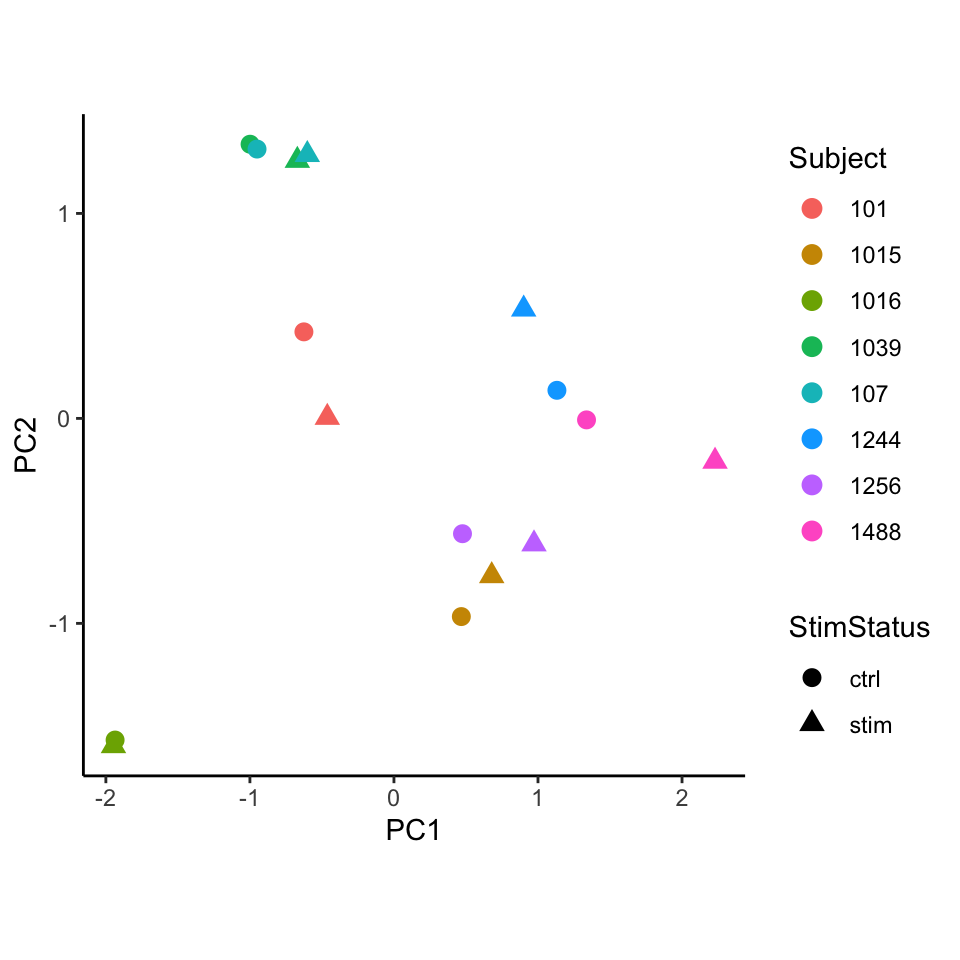
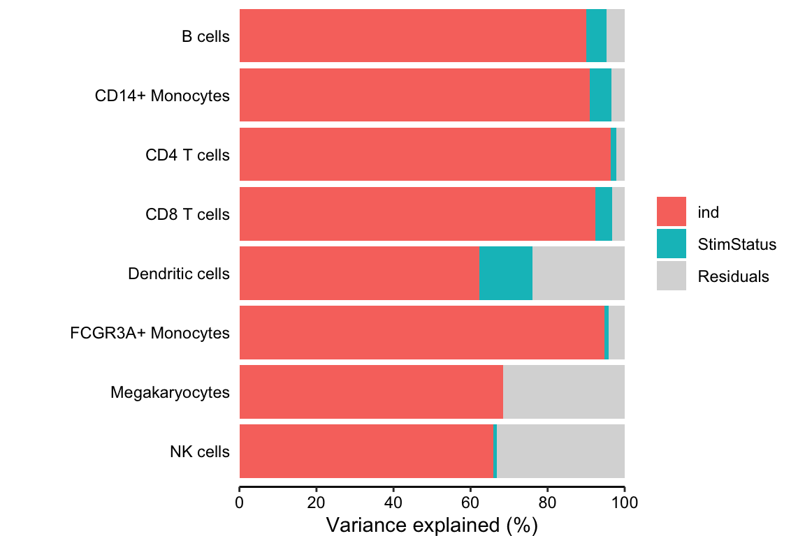

Using crumblr in practice
Developed by Gabriel Hoffman
Run on 2022-06-24 09:55:38
Source:vignettes/crumblr.Rmd
crumblr.RmdHere we consider counts for 8 cell types from quantified using single cell RNA-seq data from unstimulated and interferon β stimulated PBMCs from 8 subjects (Kang, et al., 2018).
The functions used below incorporate the precision weights:
Differential testing
Here we evaluate whether the observed cell proportions change in response to interferon β. Given the results here, we cannot reject the null hypothesis that interferon β does not affect the cell type proportions.
library(crumblr)
# Load cell counts from Kang, et al. (2018)
# https://doi.org/10.1038/nbt.4042
data(IFNCellCounts)
# Apply crumblr transformation
# cobj is an EList object compatable with limma workflow
# cobj$E stores transformed values
# cobj$weights stores precision weights
cobj = crumblr(cellCounts)
# Use limma workflow to analyze each cell
# Perform regression on each cell type separately
# then use eBayes to shrink residual variance
# Also compatible with variancePartition::dream() for linear mixed models
library(limma)
design = model.matrix( ~ StimStatus + ind, info)
fit = lmFit(cobj, design)
fit = eBayes(fit)
# Extract results for each cell type
topTable(fit, coef="StimStatusstim", number=Inf, sort.by="none")## logFC AveExpr t P.Value adj.P.Val B
## B cells -0.09825871 0.5516882 -0.6779201 0.5076669 0.823424 -4.746255
## CD14+ Monocytes -0.12437220 1.2698117 -0.9560159 0.3535191 0.823424 -4.685558
## CD4 T cells -0.07763160 2.0201947 -0.4732415 0.6425378 0.823424 -4.900413
## CD8 T cells -0.16431725 0.0857175 -0.3892080 0.7023377 0.823424 -4.758201
## Dendritic cells 0.32516900 -2.1849234 1.0895217 0.2923251 0.823424 -4.590653
## FCGR3A+ Monocytes 0.06580754 -0.2567492 0.3460969 0.7338531 0.823424 -4.734622
## Megakaryocytes 0.04681137 -1.8655172 0.2268978 0.8234240 0.823424 -4.635391
## NK cells 0.08494553 0.3797777 0.5814645 0.5691622 0.823424 -4.753355PCA
Performing PCA on the transformed cell counts indicates that the samples cluster based on subject rather than stimulation status.
library(ggplot2)
# Apply variance stabilizing transform
M_vst = vst(cobj)
# Perform PCA
pca = prcomp(t(M_vst))
# merge with metadata
df_pca = merge(pca$x, info, by="row.names")
# Plot PCA
# color by Subject
# shape by Stimulated vs unstimulated
ggplot(df_pca, aes(PC1, PC2, color=as.character(ind), shape=StimStatus)) +
geom_point(size=3) +
theme_classic() +
theme(aspect.ratio=1) +
scale_color_discrete(name="Subject") +
xlab("PC1") + ylab("PC2")
Variance partitioning
Decomposing the variance illustrates that more variation is explained by subject than stimulation status.
library(variancePartition)
# Partition variance into components for Subject (i.e. ind)
# and stimulation status, and residual variation
vp = fitExtractVarPartModel( cobj, ~ ind + StimStatus, info)
# Plot variance fractions
plotPercentBars(vp)